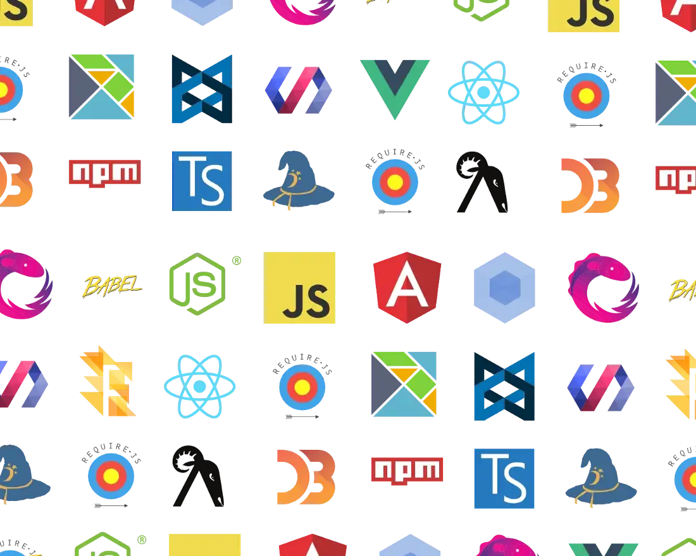

≤Summary
of =
"qualification"
/>

- I know UX standards for mobile interfaces (Android, iOS, Win Mobile, Blackberry), Desktop (Windows 95 - 11, Linux Debian distributions with Gnome and KDE), browsers (based on V8, Gecko, IE).
- I can read SOAP, REST schemes, I know OSI, TCP IP network models and how requests/responses are sent and received, how a person who knows programming can get into source codes, query a database.
- As AQA in the past I wrote Selenium (GUI tests), Selenide, Rest Assured (API) and Unit tests to help developers with TestNG, Junit in Java (my first language).
- My code i in acceptance with clean code (KISS, DRY...), Builder, Factory patterns.
- I can hang on with CI/CD via Jenkins, GitHub Actions.